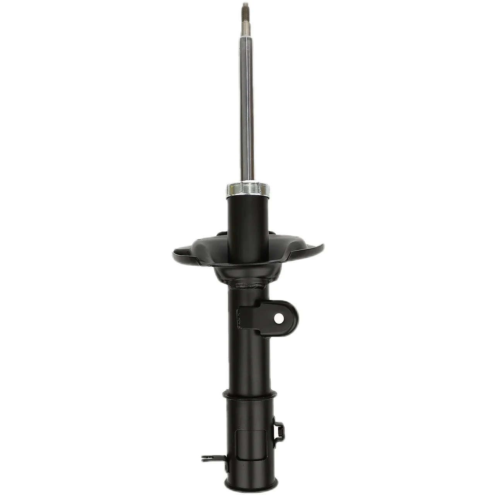

Mercedes-Benz platforms rely on this shock mount / strut mount — reference 1693200073. Our export team ships it worldwide with documented QC checks. Verify fitment in the table below before requesting a quotation.
OE 1693200073 is a Shock Mount / Strut Mount reference. In the Hyundai-Kia numbering system the prefix 16932 denotes the Front Shock Absorber family, which holds 6 references in KingMay's Guangzhou catalog. Wholesale MOQ is 10 pieces; quotes are issued within one business day.
How 1693200073 decodes in the Hyundai-Kia catalog system. The prefix identifies the component family; the suffix carries model and variant information.
| Field | Value |
|---|---|
| Full reference | 1693200073 |
| Normalized (no hyphen) | 1693200073 |
| Prefix (family code) | 16932 |
| Prefix maps to | Front Shock Absorber |
| References sharing prefix 16932 | 6 in KingMay catalog |
| Numbering family | Hyundai-Kia 5+5 format |

Other part numbers frequently ordered together with 1693200073 by wholesale clients.
| OE Number | Component |
|---|---|
| 1243200473 | Shock Mount / Strut Mount for MERCEDES-BENZ SL (R129), E-CLA |
| 1243201444 | Shock Mount / Strut Mount for MERCEDES-BENZ E-CLASS (W124), |
| 2013202444 | Shock Mount / Strut Mount for MERCEDES-BENZ 190 (W201) |
| 2043201273 | Shock Mount / Strut Mount for MERCEDES-BENZ C-CLASS (W204), |
| 2103210584 | Shock Mount / Strut Mount for |
| 2463230020 | Shock Mount / Strut Mount for MERCEDES-BENZ CLA Coupe (C117) |
| 31306778833 | Shock Mount / Strut Mount for MINI MINI (R50, R53), MINI Con |
| 31306795083 | Shock Mount / Strut Mount for BMW 6 Gran Coupe (F06), 5 (F10 |
References that share the 16932 family prefix with 1693200073. In the Hyundai-Kia numbering system the leading five digits identify the component family, so these numbers usually belong to the same assembly group and are ordered together by distributors building a consolidated shipment. Always confirm the variant suffix, connector layout and dimensions before substituting one reference for another.
Other part numbers in the suspension, steering & brake group that wholesale clients order alongside OE 1693200073. Grouping mixed references into one shipment is how most importers reach full-container freight thresholds.
Browse all 2,854 Suspension, Steering & Brake OE references → · ← Previous in Suspension, Steering & Brake · Next in Suspension, Steering & Brake →
| Item | Detail |
|---|---|
| Export packing | Neutral carton, inner foam protection; custom labels on request |
| Lead time | 7 working days (stock) · 25-35 days (production run) |
| Shipping terms | FOB Guangzhou / Shenzhen; CIF & DDP negotiable |
| Payment | T/T, LC at sight for contracts; sample orders by T/T |
| QC documentation | Packing list + photo report + dimension check per shipment |
The questions below are the ones buyers raise most often about OE 1693200073 — fitment, fault symptoms, cross-references, pricing and export terms. Each answer is written to be quotable on its own.
Report it with the order number and packing-list line plus photographs. Because every carton is photographed before loading, we can trace the batch immediately and settle the claim against the inspection record instead of arguing from memory.
Noise normally traces to worn internal surfaces, a loose mount, a dry bearing or contact with a neighbouring part. Isolate it by reproducing the sound at a fixed speed, then compare against the reference photo for 1693200073 to confirm the right replacement.
KingMay Auto Parts ships 1693200073 wholesale from Guangzhou to importers, distributors and workshops. Order directly from this page, or send the reference to our export desk for pricing, samples and documentation.
Wholesale pricing for 1693200073 depends on order quantity, surface treatment and packing. Standard references are quoted ex-Guangzhou with tiered pricing from 10 pieces upward — send quantity and destination port and a quotation usually returns within one business day.
Position depends on the platform. On most Mercedes-Benz applications the shock mount / strut mount sits on the suspension, steering & brake assembly and can be reached from the engine bay or the underbody without removing the dashboard. Torque figures and disassembly order are given in the workshop manual for each model.
Yes, if the alternate shares the same engineering envelope. Shortlist candidates from the Related OE References table, then check bolt pattern, electrical pinout and material grade. A difference in any of those three means it is a different part, not a substitute.
Buyers searching for OE 1693200073 most often land on these pages next.
Ask for the 1693200073 sample kit: photo confirmation, dimension report and material grade documentation included. All 1693200073 shipments leave with a packing list, photo documentation and QC report. Combined orders with other Hyundai-Kia references can share one container to cut landed cost. Payment terms are negotiable for established distributors; first-time buyers are welcome to start with a sample lot.
Send quantity + destination port. Quotations typically return within one business day.